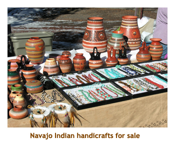
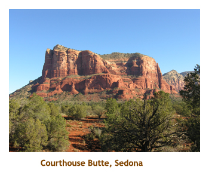
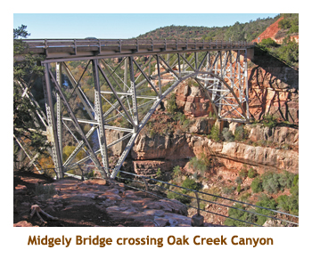
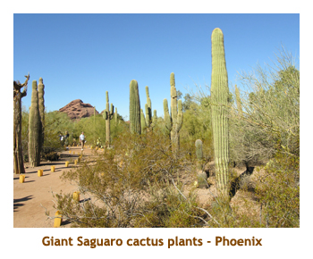
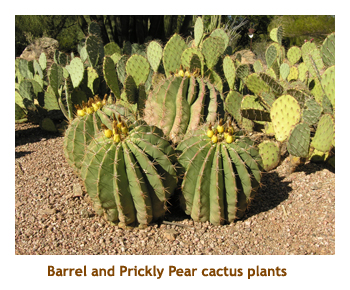
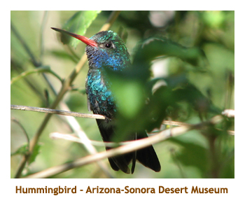
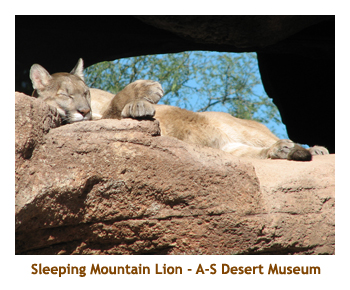
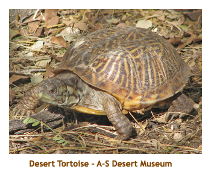
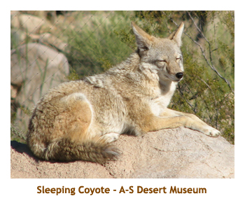

[ Home ] [ Travel ] [ Photography ] [ Pets ] [ Games] [ Rowing] [ Physics ]


Off to the Sonoran Desert
Calgary - Sedona - Phoenix - Tucson - CalgaryTravel
Cruises
Past Cruises (Diaries)
Future Cruises
Rogues Galleries
Land Trips
Diaries (Land Trips)
Hawai'i - Big Island - 04'01
Hawai'i - Maui - 05'02
Hawai'i - Big Island - 04'03
Hawai'i - Kaua'i - 09'04
Hawai'i - Big Island - 04'06
Hawai'i - Maui - 04'06
Mainland China - 05'07
Phoenix, Arizona - 12'07
Greek Isles - 05'08
Hawai'i - Kaua'i - 09'08
Hawai'i - Big Island - 09'09
Hawai'i - Maui - 05'12
Hawai'i - Big Island - 04'13
Ireland - 08'13
Mexico - Cancun 11'13
France/Belgium/Lux 07'15
Hawai'i - Big Island - 05'17
England / Wales - 06'17
Hawai'i - Big Island - 09'19
Photography
Cameras
Underwater
Pets
Tara
Blackie
Whitey
Muffy
Ollie
Rusty
Fluffy
Rufus&Dufus
Games
Rowing
Physics
Day 1 (Dec 1) - Flight to Phoenix
Winter was on its way, so we decided it was time for a quick trip to somewhere warm and sunny. We had never been to the desert before, so thought that Phoenix was a good place to go. We mentioned the trip to Dave and Joan, and they quickly decided to join us there. I was very excited about seeing the desert, as one of my favorite TV shows is the "Desert Speaks" series on PBS HD. I had seen so many programs on the Sonoran Desert that I had to see it for myself.
Marjorie was low on holidays, so we organized a 5 day trip spanning a weekend. (D&J stayed on for the whole week!) Our timing was impeccable as Calgary was just dipping into a week or so of -15 temperatures. Didn't mind leaving that behind at all.
We drove to the airport and parked in the long term parking area.
Our plane was supposed to leave Calgary at 8AM, but was delayed an hour or so due to mechanical difficulties.
When we arrived in Phoenix, it was cool and cloudy, the previous day having had torrential rainfalls. However, we
never saw a cloud for the rest of the trip and the temperature was in the mid 70's. Beautiful! Our rental car was
a Subaru Forester. It was roomy enough for us and our luggage.
 It was just after noon as we headed to out hotel, so we stopped for lunch along the way. We took a chance on a "Miracle Mile" deli. It had sandwiches and burgers and was very good. I think the restaurant is Jewish. Our hotel was at the Pointe Hilton Tapatio. It was pretty good. The hotel complex is fairly old and was under reconstruction. Our room was nice suite, but smelled quite musty. When we arrived it had just rained and some of the walkways had a couple of inches of water. Other than that it was fine. I really enjoyed the hot tub each evening.
Dave and Joan arrived after a later flight. For our first evening, we drove around the area looking for a suitable restaurant. We found a Chinese place (the Bamboo House) which was very good. Hadn't had Chinese in a while.
After we returned to the hotel, Dave and I did the hot tub thing. Very nice! Then off to bed.
Day 2 (Dec 2) - Sidetrip to Red Rock Country
 We had decided that the gardens / museums would be less busy on week days, so did our trip north to Sedona on Sunday. We had a quick breakfast (cookies and eggnog!) and headed off early. It was a bright sunny day. As we headed north, we left the flat land of Phoenix and climbed up through some mountains and buttes. The sun was still low, so the lighting on the hills was spectacular. We reached Sedona in about 1 1/2 hours. We passed through Sedona, pausing to take some photos of Bell Rock and Courthouse Rock, and continued up 89A along the Oak Creek Canyon. Sedona is about 5,000 feet high, and where we stopped at the end of the canyon was almost 7,000 feet. despite the cloudless sunny day, it was barely above freezing. There was snow on the ground.
At the scenic stopping point, there were a number of tables displaying Navajo Indian handicrafts. We purchased
a small bowl / planter that had an Indian design and paintings of several buttes. We walked around the canyon overlook
for a while and browsed through the tables of handicrafts. It was strange being in such a "wintery" setting in Arizona!
 Then we headed back into Sedona for lunch. We tried to eat at the "Coffee Pot" restaurant (noted for omelettes), but there was a lineup waiting for tables. We stopped in to a hotel and asked for recommendations. We ended up eating at the "Hog Wild" restaurant, which featured pork on the menu as well as pig and javelina decorations around the room. I had baby back ribs which were very good.
We then drove south the way we had come earlier, back towards Phoenix.
Along the way, we stopped at a huge outlet mall in Anthem, that we had noticed on the way up. There were
quite a number of stores there.
They had a very tall Christmas tree set up outdoors - maybe 30 feet high. We did some Christmas shopping and then
returned to Phoenix by 4:30 or so. Dave and Joan had stayed in the Phoenix area for the day, so we met them at the
hotel to go out to dinner together. We decided on dinner at the "Tutti
Santi" - an Italian restaurant (I had lamb oso bucco). After dinner it was in to the hot tub again to end the day.
Day 3 (Dec 3) - Around Phoenix
 Today was our day to stay in the Phoenix area. We grabbed breakfast at a nearby MacDonald's, and then met Dave and Joan. We were off to the Phoenix Desert Botanical Gardens for the morning. It was a beautiful sunny day and the temperature would climb up into the mid 70's. We decided to each take our own car, as we planned to do different things in the afternoon.
The botanical garden was wonderful. It is a huge park, with hundreds of species of cactus and other desert
plants. It was decorated for Christmas, including a couple of Christmas trees and rows of candles (in plastic "bags")
lining the walkways. There must have been several hundred candles which would take a long time to light up each evening.
The park was divided up into logical sections covering local Sonoran Desert plants, foreign desert plants, etc. There
were even gardens to attract butterflies, bees and birds.
 Not being tourist season, there were very few people there. No crowds - just us! We walked through the park for a couple of hours, until we had our fill of cactus plants, and then headed off for lunch. We found a nearby sub shop and had the turkey luncheon special. Then we split up for the afternoon - D&J going south to Chandler and Marj and I going to the Scottsdale Mall.
What a huge mall! We shopped their for an hour or so and were heading out to the exit when we spotted Dave using his laptop in the food court. They hadn't gone to Chandler after all. We talked for a bit, used Dave's laptop to send an email to the kids, and then headed out to go north to a JC Penny / Macy's mall. Again we did about an hour of shopping, including stopping at a Target that we spotted along the way. We also found a "Cousins Subs" shop that we had heard about from a lady at the hotel. It is quite a large chain of sub shops across 10 states. The owners' names are not Cousins - they are actual cousins. Then it was back to the hotel to meet up with D&J again for dinner. This time we went to a Red Lobster that we had passed earlier in the day. Had a great scallops and jumbo shrimp dinner, with a fruit smoothie. Very good!
After dinner it was back to the hotel for our evening hot tub. It gets dark quite early (about 6 PM), so our hot tubbing was
always after dark.
Day 4 (Dec 4) - Sidetrip to Tucson
 Today is our last full day in Arizona. Our plan was to travel south to Tucson and visit the Arizona-Sonora Desert Museum. We once again grabbed a quick breakfast at MacDonald's and the four of us headed off to Tucson. As we were doing the same tour, we all went in my car. It was just over a 2 hour drive to the museum. We arrived about 11 AM. Again there were very few tourists there.
This museum is even larger than the botanical gardens we visited yesterday. It is not only a huge botanical
garden, it also has mineral displays, underground caves, a hummingbird house and various animals in a zoo-like setting.
You could spend a whole day here (and we did!). The hummingbird house was very interesting. You can walk into the
caged area and the hummingbirds fly all around you. The animals we saw included black bear, cougers, an ocelot,
bobcats, prairie dogs, desert wolves, coyotes, mountain sheep and some deer. There was a javelina display,
but they must have been hiding that day. We also saw many varieties of snakes, frogs and lizards, and even a small
tortoise.
 We had lunch at the museum. The main restaurant was closed for the season, but the cafeteria was still open. We had burgers and hot dogs - typical zoo fare! We spent a good portion of the afternoon walking through the gardens and exhibits. It really was a very interesting park. Well worth the visit.
We left mid afternoon as we still had a 2 hour drive back to Phoenix. Marj had booked us into a B&B for the final night
and we had checked out of our hotel that morning and left our bags in D&J's car. We went straight to the B&B to check in
before dark. Then we went to a nearby restaurant for dinner - Chelsea's Kitchen. After dinner we took D&J back to the hotel
and picked up our bags. No hot tubbing tonight! Saying goodbye to D&J, we drove back to the B&B for the night. The
B&B owners were very friendly. Our room was in a guesthouse on the property. Very nice.
Day 5 (Dec 5) - Return from Phoenix
 We woke up fairly early and had a bit of a walk along the canal before having breakfast at 8 AM. We had quiche and a cinnamon / nut bread. It was very good.
After breakfast we gathered our bags and headed off to the airport. We were supposed to leave at 11:30,
so needed to get to the airport and drop off the car. However, the plane ended up being delayed almost 2 hours. Had
we known, we would have had time to do a bit of sight seeing or shopping in Phoenix before going to the airport. As it
was, we spent the extra 2 hours sitting in the waiting room.
 It was another nice sunny day in Phoenix, with temperatures in the mid 70's. It was no fun to be heading back to -15 in Calgary! We arrived in Calgary about 5PM (after dark) and were shuttled to our snow covered car in the long term parking lot. What a welcome home! We also had to drive home in rush hour traffic. What fun!
All in all we had a wonderful trip. The desert and scenery were awesome, the parks / gardens were very
interesting and the weather was fabulous! We'll have to go back again some day.